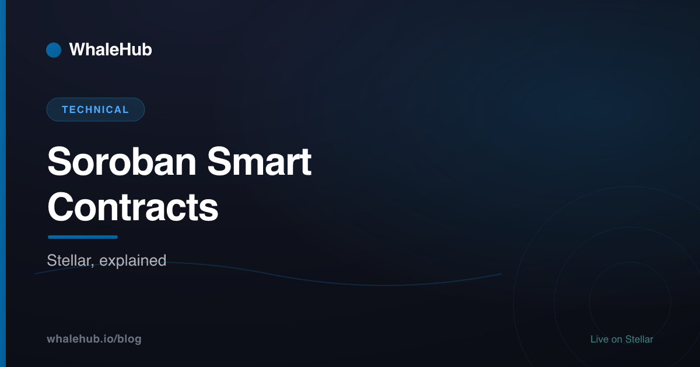

Soroban Smart Contracts Explained (Stellar)

Soroban is Stellar's smart-contract platform, launched in 2023. You write contracts in Rust, compile them to WebAssembly (Wasm), and the network runs them with fees metered by the exact resources each call consumes. It sits beside Stellar's classic payment layer and connects to it through the Stellar Asset Contract, which lets contracts hold and move existing assets like AQUA and BLUB — the ingredient that turned Stellar's fast, sub-cent settlement into a base for composable DeFi.
What is Soroban?
Soroban is Stellar's smart-contract platform, launched in 2023. Developers write contracts in Rust and compile them to WebAssembly (Wasm), which the network executes deterministically. It adds programmable, composable logic to Stellar while interoperating with the existing "classic" assets and accounts through a built-in bridge called the Stellar Asset Contract.
For most of its life, Stellar was a payments network: it could issue assets, run a built-in order-book exchange (the SDEX), and settle transactions in about five seconds for a fraction of a cent — but it couldn't run arbitrary programmable logic. Soroban filled that gap without throwing away what already worked.
The key design choice is separation. Soroban is a distinct execution layer from the classic transaction system, so contract execution can be metered, sandboxed, and eventually parallelised, while everyday payments stay simple and cheap. The two layers meet through well-defined bridges rather than being fused into one monolith. If you're new to the wider ecosystem, our Stellar DeFi guide maps how Soroban fits alongside AQUA and the Aquarius AMM.
Rust, compiled to WebAssembly
Soroban contracts are written in Rust and compiled to WebAssembly (Wasm). Rust brings strong memory safety and a mature tool-chain; Wasm is a compact, sandboxed, deterministic execution target already used across browsers and cloud runtimes. The network stores and runs the resulting Wasm bytecode, so any language that compiles to Wasm could, in principle, target Soroban.
In practice that means installing the Rust tool-chain, adding the soroban-sdk crate, and building to the wasm32-unknown-unknown target. The SDK provides the contract macros, host types, and storage helpers. A minimal contract looks like this — the "glass box" of what a Soroban program actually is:
#![no_std]
use soroban_sdk::{contract, contractimpl, symbol_short, Env, Symbol};
const COUNTER: Symbol = symbol_short!("COUNTER");
#[contract]
pub struct CounterContract;
#[contractimpl]
impl CounterContract {
/// Increment a stored counter and return the new value.
pub fn increment(env: Env) -> u32 {
let mut count: u32 = env.storage().instance().get(&COUNTER).unwrap_or(0);
count += 1;
env.storage().instance().set(&COUNTER, &count);
// Keep the contract's data alive by extending its TTL.
env.storage().instance().extend_ttl(100, 100);
count
}
}A few things are worth noticing. The #![no_std] attribute keeps the binary tiny by dropping the standard library. All host interaction — storage, events, ledger access — flows through the Env object, which keeps contracts deterministic and sandboxed. And even this toy example has to think about extend_ttl, because on Soroban stored data does not live forever by default.
Soroban vs. the EVM
Soroban differs from Ethereum's EVM in three big ways: it uses Rust compiled to WebAssembly instead of Solidity on EVM bytecode; it meters fees by the actual resources a call uses rather than a single gas price; and it charges rent for stored state via a time-to-live (TTL) instead of storing data permanently. It also runs alongside Stellar's classic payment layer.
If you're coming from Solidity, the mental model shifts. Here's a side-by-side of the pieces that trip people up most:
| Aspect | Soroban (Stellar) | EVM (Ethereum & forks) |
|---|---|---|
| Language | Rust (any Wasm-targeting language in theory) | Solidity, Vyper |
| Compiles to | WebAssembly (Wasm) | EVM bytecode |
| Fee model | Resource metering — CPU, memory, ledger reads/writes priced separately | Single gas unit × gas price |
| Storage | Rent via TTL; data can expire and be archived | Permanent unless deleted; one-time cost |
| Asset interop | Native classic assets via the Stellar Asset Contract | Assets are themselves contracts (ERC-20) |
| Finality | ~5s deterministic (Stellar Consensus Protocol) | Probabilistic, minutes to full finality |
None of these make one platform strictly "better." They reflect different priorities: Soroban optimises for predictable low fees, bounded state growth, and reuse of Stellar's existing asset rails.
Fees, resource metering & state TTL
Soroban prices each transaction by the concrete resources it consumes — CPU instructions, memory, and the number of ledger entries read and written — rather than one blended gas number. Stored contract data carries a time-to-live (TTL) measured in ledgers; to keep it you pay rent to extend the TTL, and if it lapses the entry is archived until restored.
Resource metering makes costs legible. Instead of guessing a gas limit, a contract's fee is a function of the specific work it did, which is why Stellar can keep base fees at a fraction of a cent while staying spam-resistant.
How state rent works, step by step
- A contract writes an entry (a balance, a config value). That entry is created with an initial TTL — a deadline expressed in ledgers.
- Each read or write can bump the TTL forward by paying a small rent fee, as the
extend_ttlcall in the snippet above does. - If an entry's TTL passes without renewal, it is archived — removed from the live state but recoverable.
- To use archived data again, a transaction must restore it, paying to bring it back into the active ledger.
This is Soroban's answer to state bloat, the problem where permanent storage on other chains grows forever and every node must carry it. Rent gives inactive data a natural way to fall out of the working set.
The Stellar Asset Contract (SAC)
The Stellar Asset Contract is a built-in Soroban contract that exposes a classic Stellar asset — like AQUA — through a standard token interface so smart contracts can hold, transfer, and reason about it. It is the bridge between Stellar's classic asset layer and the Soroban contract layer, giving every classic asset a contract-native address.
This matters because Stellar already had assets long before Soroban existed. Rather than forcing every issuer to redeploy as a bespoke token contract, the SAC wraps a classic asset in a canonical interface (balances, transfers, allowances) that any Soroban contract can call. A single asset can therefore live in both worlds at once: usable in classic payments and in programmable contract logic.
Some tokens are only Soroban tokens, issued natively as a SAC with a contract as their mint authority. That's exactly how WhaleHub's BLUB token is built.
Why it unlocks composable DeFi
Composability is the ability for one contract to call another and build higher-order behaviour without permission. Before Soroban, Stellar had assets and an AMM but no way to program logic on top of them. With Soroban, a contract can hold assets via SACs, call the AMM, claim rewards, and re-invest — all atomically.
- Contracts can custody assets. Through SACs, a vault contract can hold AQUA, receive emissions, and route them without a human in the loop.
- Strategies become programs. Voting, claiming, and compounding can be encoded once and executed repeatedly for near-zero fees.
- Low fees make automation viable. Compounding dozens of times a day would be gas-prohibitive elsewhere; on Stellar it's rounding error.
That last point is the whole thesis behind yield optimizers. To see where AQUA and ICE voting come into it, read Aquarius AMM Explained and ICE Voting & Bribes.
A real example: BLUB is a Soroban SAC
WhaleHub's BLUB is a Soroban token implemented as a Stellar Asset Contract with 7 decimals, whose mint authority is the staking contract. When a user stakes AQUA, the contract mints BLUB on-chain as a liquid receipt. Because BLUB is a SAC, it moves freely between contracts, the Aquarius AMM, and ordinary accounts — a concrete illustration of Soroban plus SACs in production.
Here's the flow in practice. A user locks AQUA in the staking contract. That contract — the SAC's mint authority — mints BLUB 1:1 to the user's staking balance as a liquid derivative of their staked position. BLUB then trades in the Aquarius BLUB-AQUA pool, so its value is market-determined by pool reserves rather than fixed. Rewards the protocol harvests are swapped to BLUB and distributed proportionally, and the whole cycle runs as Soroban contract calls.
For reference, the BLUB contract address is CBMFDIRY5OKI4JJURXC4SMEQPWB4UUADIADJK4NA6CYBNOYK4W4TMLLF. It's a compact, verifiable demonstration of everything above: Rust compiled to Wasm, resource-metered execution, TTL-managed state, and a classic-compatible asset interface. The deeper mechanics live in What Is the BLUB Token?.
Soroban is the piece that made Stellar programmable without sacrificing its speed or cost. Rust to Wasm gives a safe, portable runtime; resource metering and state TTL keep fees and storage honest; and the Stellar Asset Contract stitches new contract logic onto Stellar's existing assets. Put together, that's what lets protocols like WhaleHub automate strategies that would be uneconomical anywhere fees are high.
Frequently asked questions
What is Soroban on Stellar?
Soroban is Stellar's smart-contract platform, launched in 2023. Developers write contracts in Rust and compile them to WebAssembly (Wasm), which the network executes. It adds programmable, composable logic to Stellar while interoperating with existing classic assets through the Stellar Asset Contract.
What language are Soroban contracts written in?
Soroban contracts are written in Rust and compiled to WebAssembly (Wasm). Rust gives strong memory safety and a mature tool-chain, while Wasm gives a compact, sandboxed, deterministic execution target. This differs from Ethereum, which typically uses Solidity compiled to EVM bytecode.
How is Soroban different from Ethereum smart contracts?
Soroban uses Rust compiled to WebAssembly instead of Solidity on the EVM, meters fees by actual resources used rather than a single gas price, and charges state rent through TTL so stored data must be periodically renewed. It also runs alongside Stellar's classic payment layer.
What is a Stellar Asset Contract (SAC)?
The Stellar Asset Contract is a built-in Soroban contract that exposes a classic Stellar asset, like AQUA, through a standard token interface so smart contracts can transfer and hold it. It bridges the classic asset layer and the Soroban contract layer.
What is state TTL and state rent on Soroban?
Every piece of Soroban contract data has a time-to-live (TTL) measured in ledgers. To keep data alive you pay rent to extend its TTL; if it expires the entry is archived and must be restored before use. This keeps on-chain state from growing without bound.
Is BLUB a Soroban smart contract?
Yes. WhaleHub's BLUB is a Soroban token implemented as a Stellar Asset Contract with 7 decimals. Its mint authority is the staking contract, so BLUB is created on-chain when users stake AQUA and is transferable between contracts and accounts like any Soroban token.
WhaleHub is a yield-optimization protocol on Stellar. We stake AQUA, aggregate ICE voting power, and auto-compound Aquarius rewards for stakers — all on Soroban contracts. This series explains the Stellar DeFi stack in plain English.
Read more


Soroban, put to work
Stake AQUA, get BLUB 1:1, and let WhaleHub's Soroban contracts aggregate ICE and auto-compound rewards for you.
Launch the appThis article is for educational purposes only and is not financial advice. DeFi involves risk, including the potential loss of capital. Do your own research and consult a qualified professional before making investment decisions.